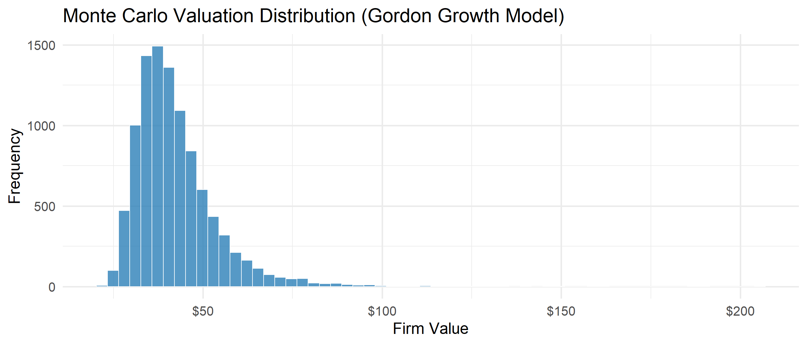
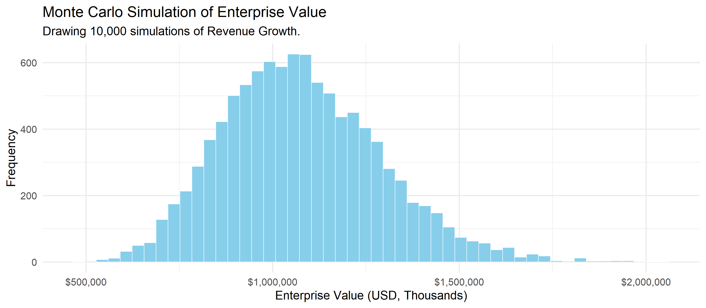
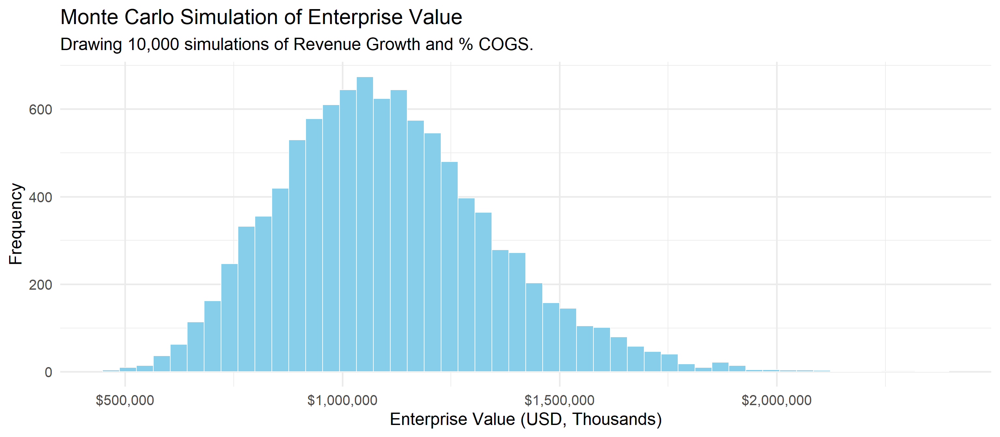
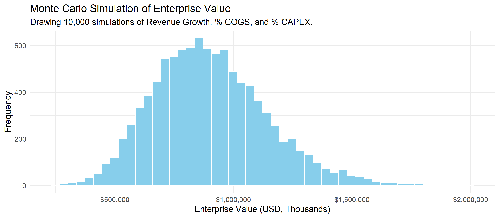
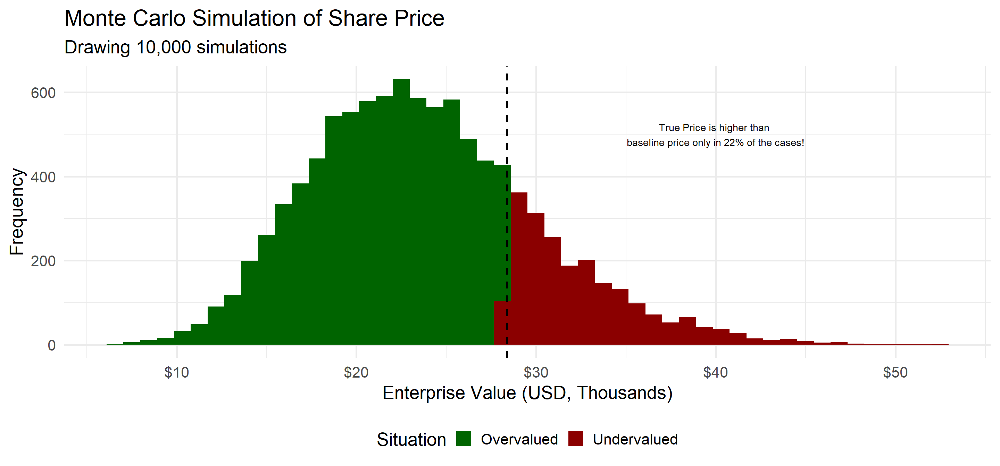
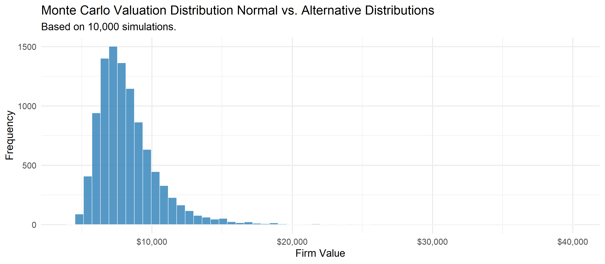
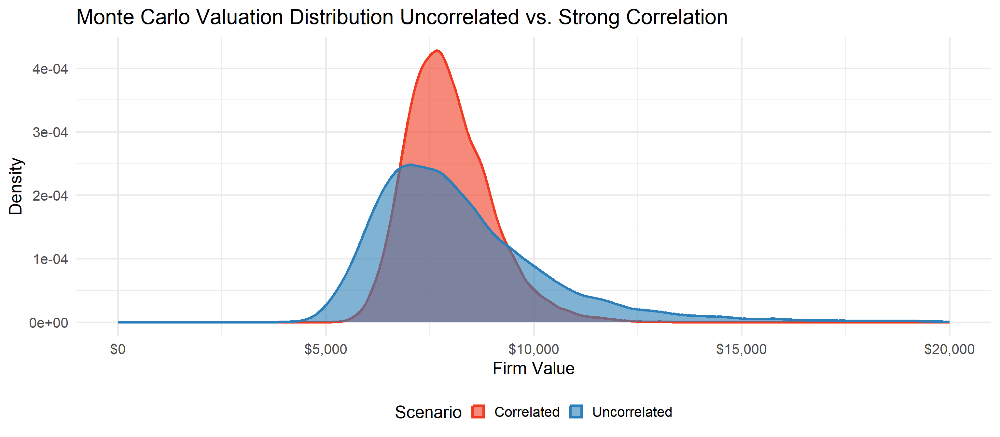
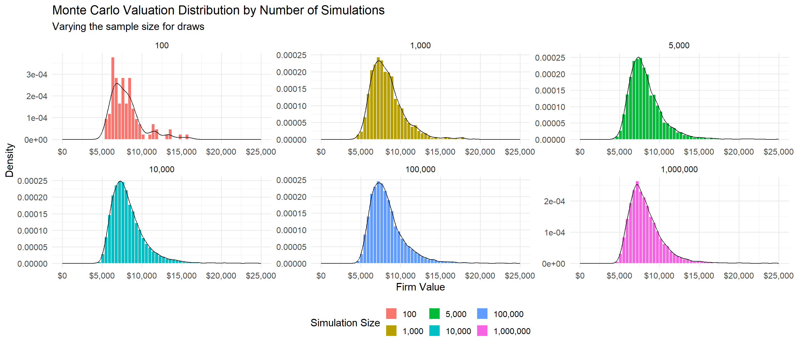
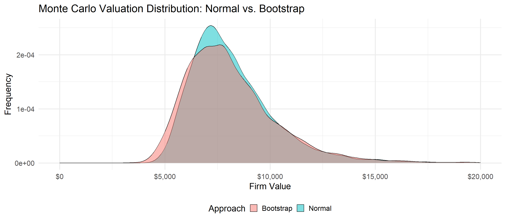

#Set seed for reproducibility
set.seed(123)
# Parameters
n_sim <- 10000
D1 <- 2
# Simulate r and g
r <- rnorm(n_sim, mean = 0.08, sd = 0.01)
g <- rnorm(n_sim, mean = 0.03, sd = 0.005)
# Compute values
value <- D1 / (r - g)
# Filter for valid values where r > g
value <- value[is.finite(value) & (r > g)]
# Plot
library(ggplot2)
library(scales)
ggplot(data.frame(Value = value), aes(x = Value)) +
geom_histogram(bins = 60, fill = "#2c7fb8", color = "white", alpha = 0.8) +
scale_x_continuous(labels=scales::dollar)+
labs(
title = "Monte Carlo Valuation Distribution (Gordon Growth Model)",
x = "Firm Value",
y = "Frequency"
) +
theme_minimal(base_size=20)Equity Valuation and Simulation
Lucas S. Macoris (FGV-EAESP)
Outline
- This lecture is mainly based the following textbooks:
- Tidy Finance (Scheuch, Voigt, and Weiss 2023)
- R for Data Science (Wickham, Mine Cetinkaya-Rundel, and Grolemund 2023)
Coding Replications
For coding replications, whenever applicable, please follow this page or hover on the specific slides with containing coding chunks.
- Ensure that you have your session properly set-up according to the instructions outlined in the course webpage
- In the webpage, you can also find a detailed discussion of the examples covered in this lecture
Disclaimer
Disclaimer
The information presented in this lecture is for educational and informational purposes only and should not be construed as investment advice. Nothing discussed constitutes a recommendation to buy, sell, or hold any financial instrument or security. Investment decisions should be made based on individual research and consultation with a qualified financial professional. The presenter assumes no responsibility for any financial decisions made based on this content.
All code used in this lecture is publicly available and is also shared on my GitHub page. Participants are encouraged to review, modify, and use the code for their own learning and research purposes. However, no guarantees are made regarding the accuracy, completeness, or suitability of the code for any specific application.
For any questions or concerns, please feel free to reach out via email at lucas.macoris@fgv.br
Dealing with Uncertainty in Valuation Models
- Traditional valuation methods (e.g., Discounted Cash Flow) rely on single-point estimates:
- We assume a given level of revenue growth…
- We also fix the appropriate discount rates, \(r\), over time…
- Finally, we come up with assumptions regarding the firm’s Terminal Value (i.e, the perpetuity value)!
- Note, however, that these estimates are subject to significant uncertainty:
- Market conditions
- Competition
- Regulation
- Macroeconomic and exogenous shocks, such as COVID-19
Question: how can get take into account the role of uncertainty in valuation models?
Dealing with Uncertainty in Valuation Models, continued
- Suppose we have the following Discounted Cash Flow estimate:
\[ \text{Firm Value} = \sum_{t=1}^{T} \frac{FCF_t}{(1 + r)^t} \]
\(FCF_t\) depends on a variety of firm-level factors, such as sales growth, gross margins, taxes, among others
Similarly, \(r\), the discount rate, if modeled using the CAPM, depends upon factors such as the sensitivity to market risk (\(\beta\)), the risk-free rate, \(r_f\), and the market risk premium
- Changes in those variables can severely affect the outcomes of our valuation: for example, if the realized \(FCF\)’s are lower than what we assumed, we might be overestimating the firm’s value!
Sensitivity Analysis
- A first way in which we can take uncertainty into account is through Sensitivity Analysis:
Definition
- Sensitivity analysis tests how changes in a single input affect the valuation output, while all other variables are held constant. It is useful to identify key value drivers and assess their impact.
Fix the main drivers of your outcome variable (e.g, growth rate of COGS, growth rate of Sales, Cost of Capital, etc)
For each driver, create scenarios in where you vary the input of interest within a given range
For that specific scenario, collect the new outcome variable calculated when everything is fixed, but the specific driver has changed
Repeat this across all scenarios and drivers
Sensitivity Analysis, Example
- To illustrate the use of Sensitivity Analysis, we can vary \(r\), the discount rate, and observe the change in the firm’s value for each distinct \(r\):
| Discount Rate (\(r\)) | Firm Value (in millions) |
|---|---|
| \(6\%\) | \(\$125\) |
| \(8\%\) | \(\$110\) |
| \(10\%\) | \(\$98\) |
Key Points on Sensitivity Analysis
- On the one hand, it helps to answer how sensitive is the valuation to some of the assumptions that were used in the model
- On the other hand, there is a clear limitation: the fact that we are varying one variable at a time doesn’t capture interactions between variables!
Scenario Analysis
As described before, a clear limitation of Sensitivity Analysis is the fact that only one input is evaluated at a time
What if we wanted to see the combined effect of multiple variables changing at the same time?
Definition
- A Scenario Analysis evaluates the effect of multiple variables changing at the same time
It is used to create alternative scenarios (e.g, Best, Base, and Worst Case Scenarios) based on business logic
It is more realistic than sensitivity analysis, but still limited to a few discrete outcomes
- It is very reasonable to assume that more than one driver is going to change at a time. To do that, we can create a grid of values and simulate changes in inputs at the same time
Scenario Analysis, continued
| Scenario | Revenue Growth | Discount Rate | Terminal Value | Firm Value |
|---|---|---|---|---|
| Best Case | \(8\%\) | \(6\%\) | High | \(\$140M\) |
| Base Case | \(5\%\) | \(8\%\) | Medium | \(\$110M\) |
| Worst Case | \(2\%\) | \(10\%\) | Low | \(\$85M\) |
Key Points on Scenario Analysis
- It highlights a range of possible outcomes under plausible assumptions
- However, it still lacks a probability component: we still don’t know how likely each of those scenarios are:
Best, Base, and Worst cases are limited in the way that they can produce scenarios because we assume that all variables will go into the same direction
Furthermore, our realized outcome fallS under a combination of those scenarios
From Scenarios to Simulations
- What if we could extend the logit of scenario simulation to \(N>>3\) scenarios? To do that, we can use simulation techniques, such as the Monte Carlo simulation:
Definition:
A Monte Carlo Simulation is a computational technique that uses random sampling to model the distribution of outcomes for a given random variable:
- We define the parameters of our simulation as probability distributions (e.g., normal, lognormal).
- Generate a large number of random scenarios for these variables
- Compute the outcome (e.g., firm value) for each scenario
- Analyze the distribution of the desired results (e.g., mean, percentiles, risk of loss)
- With Monte Carlo simulations, instead of getting a range of potential outcomes for the firm’s value, we actually get an empirical distribution of values!
Monte Carlo Implementation
To see how we can apply Monte Carlo Simulation to assess the distribution of Firm Value, let’s assume that both the free cash flow and the discount rate are random variables:
- \(FCF_t \sim \mathcal{N}(\mu_t, \sigma_t^2)\)
- \(r \sim \mathcal{N}(\mu_r, \sigma_r^2)\)
If we know the distribution of those random variables, we can draw \(N\) observations for each random variable and use it to calculate the desired outcome (i.e, the firm’s value). For draw \(i\), the estimated value of the firm is simply:
\[ \text{Firm Value}^{(i)} = \sum_{t=1}^{T} \frac{FCF_t^{(i)}}{(1 + r^{(i)})^t} \]
- Repeat for \(i = 1,2,..., N\) simulations
- Get a distribution of firm values, not just a point estimate
Monte Carlo implementation
- Suppose we are using the Gordon’s Growth Model, where the value of a firm is given by the infinite stream of dividends:
\[ V_t= \dfrac{D_1}{r-g} \]
where \(D1\) s the dividend next year, \(r\) is the discount rate, and \(g\) is the perpetual growth rate. If we assume the following distributions:
- Since \(D1\) is the next period’s dividend, and it is fixed to \(\$2\)
- \(r \sim \mathcal{N}(0.08,0.01^2)\)
- \(g \sim \mathcal{N}(0.03,0.005^2)\)
- In what follows, we will simulate \(10,000\) distinct scenarios for draws of \(r\) and \(g\) and see how the \(V_t\) distributes over all potential combinations
Monte Carlo Implementation, continued

Hands-On Exercise
- Refer back to NetScape valuation model that you have worked on prior classes. Using Monte Carlo simulations, you were asked to stress-test such model by analyzing what would have happened to the base scenario as-if some inputs were changed
Instructions
- We will be using the NetScape case we have worked on previous classes
- Your first task is to translate the valuation model in such a way that you can seamlessly replicate the baseline results
- After that, you will be prompted with a series of questions that will require you to simulate \(N\) scenarios and analyze the effects on NetScape’s value
Given that the baseline price, at the time of the valuation, was $28.46, what would be your recommendation for this stock?
Step 1: Hardcoding the assumptions
- Recall that our Free Cash Flow estimation in peiod \(t\), \(FCF_t\), is given by:
\[ FCF_t = EBIT\times (1-\tau) \pm \text{Depreciation} \pm \text{CAPEX} \pm \Delta NWC \] Where \(\tau\) is the marginal tax-rate, CAPEX is Capital Expenditures, and NWC is Net Working Capital
- In what follows, we will simulate the value of Netscape using a 10-year discounted cash flow (DCF) model with structured assumptions on top of the historical revenue levels from 1995
Step 1: Hardcoding the assumptions, continued
#Number of years
n_years=10
# Assumptions (copied and simplified)
netscape_assumptions <- list(
revenue_growth = rep(0.65,n_years),
cost_of_sales_pct = rep(0.1044,n_years),
rd_pct = rep(0.3676,n_years),
tax_rate = rep(0.34,n_years),
other_op_exp_pct = c(0.80,0.65,0.55,0.45,0.35,0.25,rep(0.2,4)),
capex_pct = c(0.45,0.4,0.3,0.2,rep(0.1,6)),
nwc_pct = rep(0,n_years),
depreciation_pct = rep(0.055,n_years),
beta=rep(1.5,n_years),
rf=rep(0.0671,n_years),
mrp=rep(0.075,n_years),
shares_outstanding = 38000,
terminal_growth = 0.04,
terminal_r=0.1796
)
# Base year (1995)
netscape_base_rev <- 33250Step 2: Getting the forecasted Free Cash Flow
After we got our assumptions in place, it is time to put them together and generate the Free Cash Flow values for \(t=1,2,...,10\)
For that, we will create a function,
get_projections, that has two arguments:assumptions: a named list containing vectors of financial assumptions (growth rates, margins, etc) for each yearbase: the base year revenue (e.g., from 1995).
We initialize an empty data frame projection with columns for each financial metric over the 10-year period, and fill out the results using the Free Cash Flow definition
With this function, you should be able to replicate the Free Cash Flows from the base scenario by calling
get_projection(netscape_assumptions,netscape_base_rev)
Step 2: Getting the forecasted Free Cash Flow, continued
# Projection over 10 years
get_projection <- function(assumptions,base){
projection=data.frame(
Year = 1:n_years,
Revenue = NA,
EBIT = NA,
Taxes = NA,
NOPAT = NA,
Depreciation = NA,
CAPEX = NA,
NWC = NA,
Delta_NWC = NA,
Discount_Rate=NA)
# Fill in projections for revenue
for (t in 1:n_years) {
if (t == 1) {
projection$Revenue[t] <- base * (1 + assumptions$revenue_growth[t])
} else {
projection$Revenue[t] <- projection$Revenue[t - 1] * (1 + assumptions$revenue_growth[t])
}
}
#Fill in FCF terms
projection$EBIT <- projection$Revenue * (1 - assumptions$cost_of_sales_pct - assumptions$rd_pct - assumptions$other_op_exp_pct - assumptions$depreciation_pct)
projection$Taxes <- projection$EBIT * assumptions$tax_rate
projection$NOPAT <- projection$EBIT - projection$Taxes
projection$Depreciation <- projection$Revenue * assumptions$depreciation_pct
projection$CAPEX <- projection$Revenue * assumptions$capex_pct
projection$NWC <- projection$Revenue*assumptions$nwc_pct
projection$Delta_NWC <- 0
projection$Discount_Rate <- 1/(1+(assumptions$rf+assumptions$mrp*assumptions$beta))^projection$Year
return(projection)
}Valuing the company using FCF
We will now create two additional functions:
The
get_dcf()function will calculate the Discounted Cash Flow for the whole period, based on the projections we have just created. It returns a scalar value representing the present value of projected Free Cash FlowsThe
get_terminal_value()will calculate an estimate of the present value of the perpetuity (in Year 0) based on the projections and the assumptions regarding the long-termrandg. ItcComputes the terminal value of the firm beyond the projection horizon using a growing perpetuity
Adding up these two values yields the total value of the firm, \(V\), which is embedded in the
get_EV()function:
Valuing the company using FCF, continued
get_dcf <- function(projection){
dcf=projection%>%
mutate(FCF = NOPAT + Depreciation - CAPEX - Delta_NWC)%>%
reframe(DCF=FCF*Discount_Rate)%>%
pull(DCF)%>%
sum()
return(dcf)
}
get_terminal_value <- function(projection,r,g){
last_fcf=projection%>%
mutate(FCF = NOPAT + Depreciation - CAPEX - Delta_NWC)%>%
pull(FCF)%>%
tail(1)
return(last_fcf*(1+g)/(r-g)/(1+r)^(n_years+1))
}
get_EV <-function(assumptions,base,r,g){
PV_FCF = get_projection(assumptions,base)%>%get_dcf()
PV_Terminal = get_projection(assumptions,base)%>%get_terminal_value(r,g)
return(PV_FCF+PV_Terminal)
}Exercise 1: changing revenue growth
#Set seed for reproducibility
set.seed(123)
# Initialize an empty dataframe
results <- numeric(0)
sim_assumptions <- netscape_assumptions
n_sim=10000
#Run the simulation
for (i in 1:n_sim){
# Simulate revenue growth for 10 years from a normal distribution
rev_growth <- rnorm(n_years, mean = 0.65, sd = 0.1)
# Modify assumptions with simulated growth
sim_assumptions$revenue_growth <- rev_growth
# Compute EV for this simulation
ev <- get_EV(sim_assumptions,
netscape_base_rev,
sim_assumptions$terminal_r,
sim_assumptions$terminal_growth)
results[i] <- ev
}
#Create a ggplot histogram
results%>%
as.tibble()%>%
ggplot(aes(x = value)) +
geom_histogram(fill = "skyblue", color = "white", bins = 50)+
scale_x_continuous(labels = scales::dollar) +
labs(
title = "Monte Carlo Simulation of Enterprise Value",
subtitle = paste0('Drawing ',comma(n_sim), ' simulations of Revenue Growth.'),
x = "Enterprise Value (USD, Thousands)",
y = "Frequency"
) +
theme_minimal(base_size = 14)
Exercise 2: Changing Revenue Growth and COGS
#Set seed for reproducibility
set.seed(123)
# Initialize an empty dataframe
results <- numeric(0)
sim_assumptions <- netscape_assumptions
n_sim=10000
#Run the simulation
for (i in 1:n_sim){
# Simulate revenue growth for 10 years from a normal distribution
rev_growth <- rnorm(n_years, mean = 0.65, sd = 0.1)
cogs_perc <- rnorm(n_years, mean = 0.10, sd = 0.025)
# Modify assumptions with simulated growth
sim_assumptions$revenue_growth <- rev_growth
sim_assumptions$cost_of_sales_pct <- cogs_perc
# Compute EV for this simulation
ev <- get_EV(sim_assumptions,
netscape_base_rev,
sim_assumptions$terminal_r,
sim_assumptions$terminal_growth)
results[i] <- ev
}
#Create a ggplot histogram
results%>%
as.tibble()%>%
ggplot(aes(x = value)) +
geom_histogram(fill = "skyblue", color = "white", bins = 50)+
scale_x_continuous(labels = scales::dollar) +
labs(
title = "Monte Carlo Simulation of Enterprise Value",
subtitle = paste0('Drawing ',comma(n_sim), ' simulations of Revenue Growth and % COGS.'),
x = "Enterprise Value (USD, Thousands)",
y = "Frequency"
) +
theme_minimal(base_size = 20)
Exercise 3: Changing Revenue Growth, COGS, and CAPEX
#Set seed for reproducibility
set.seed(123)
# Initialize an empty dataframe
results <- numeric(0)
sim_assumptions <- netscape_assumptions
n_sim=10000
#Run the simulation
for (i in 1:n_sim){
# Simulate revenue growth for 10 years from a normal distribution
rev_growth <- rnorm(n_years, mean = 0.65, sd = 0.1)
cogs_perc <- rnorm(n_years, mean = 0.10, sd = 0.025)
capex_perc <- seq(rnorm(1, mean = 0.45, sd = 0.1),to=0.1,length.out = 10)
# Modify assumptions with simulated growth
sim_assumptions$revenue_growth <- rev_growth
sim_assumptions$cost_of_sales_pct <- cogs_perc
sim_assumptions$capex_pct <- capex_perc
# Compute EV for this simulation
ev <- get_EV(sim_assumptions,
netscape_base_rev,
sim_assumptions$terminal_r,
sim_assumptions$terminal_growth)
results[i] <- ev
}
#Create a ggplot histogram
results%>%
as.tibble()%>%
ggplot(aes(x = value)) +
geom_histogram(fill = "skyblue", color = "white", bins = 50)+
scale_x_continuous(labels = scales::dollar) +
labs(
title = "Monte Carlo Simulation of Enterprise Value",
subtitle = paste0('Drawing ',comma(n_sim), ' simulations of Revenue Growth, % COGS, and % CAPEX.'),
x = "Enterprise Value (USD, Thousands)",
y = "Frequency"
) +
theme_minimal(base_size = 20)
final_results=results
Exercise 4: Different levels for terminal \(r\) and \(g\)
#Set seed for reproducibility
set.seed(123)
# Initialize an empty dataframe
results <- numeric(0)
new_data <- data.frame()
sim_assumptions <- netscape_assumptions
n_sim=1000
g_sequence <- seq(0.05,0.03,length.out=10)
r_sequence <- seq(0.15,0.225,length.out=10)
for(s in 1:10){
#Run the simulation
for (i in 1:n_sim){
# Simulate revenue growth for 10 years from a normal distribution
rev_growth <- rnorm(n_years, mean = 0.65, sd = 0.1)
cogs_perc <- rnorm(n_years, mean = 0.10, sd = 0.025)
capex_perc <- seq(rnorm(1, mean = 0.45, sd = 0.1),to=0.1,length.out = 10)
# Modify assumptions with simulated growth
sim_assumptions$revenue_growth <- rev_growth
sim_assumptions$cost_of_sales_pct <- cogs_perc
sim_assumptions$capex_pct <- capex_perc
sim_assumptions$terminal_growth = g_sequence[s]
sim_assumptions$terminal_r = r_sequence[s]
# Compute EV for this simulation
ev <- get_EV(sim_assumptions,
netscape_base_rev,
sim_assumptions$terminal_r,
sim_assumptions$terminal_growth)
results[i] <- ev
}
#Store the Pairs
new_data=new_data%>%
rbind(data.frame(Scenario = paste0('Scenario ', s),
EV=results))
message(paste0('Finished simulation for pair number ',s,'.'))
}
#install.packages('ggridges')
library(ggridges)
#Create a ggplot histogram
new_data%>%
mutate(Scenario = factor(Scenario,levels=paste0('Scenario ',10:1)))%>%
ggplot(aes(x = EV,
y = Scenario,
fill=..x..)) +
geom_density_ridges_gradient(scale = 3, rel_min_height = 0.01)+
scale_x_continuous(labels = scales::dollar) +
scale_fill_viridis_c(name = "Enterprise Value", option = "plasma",labels=scales::dollar)+
labs(
title = "Monte Carlo Simulation of Enterprise Value",
subtitle = paste0('Drawing ',comma(n_sim), ' simulations, best-to-worse scenarios.'),
x = "",
y = "Frequency",
fill = "Enterprise Value (USD, Thousands)")+
theme_minimal(base_size = 14)+
theme(legend.position = 'bottom',
legend.title = element_text(size = 14),
legend.text = element_text(size = 12),
legend.key.height = unit(0.6, "cm"),
legend.key.width = unit(2.5, "cm"))
Final Question: should we invest?
#Create a ggplot histogram
prices=final_results%>%
as.tibble()%>%
mutate(Price=value/netscape_assumptions$shares_outstanding)%>%
mutate(Situation=ifelse(Price>=28.37,'Undervalued','Overvalued'))
prices%>%
ggplot(aes(x = Price)) +
geom_histogram(aes(fill = Situation), bins = 50)+
scale_x_continuous(labels = scales::dollar)+
scale_fill_manual(values=c('darkgreen','darkred'))+
geom_vline(xintercept=28.37,linetype='dashed',size=1)+
annotate(geom='text',x=40,y=500,label= paste0('True Price is higher than \nbaseline price only in ',
percent(mean(prices$Price>=28.37)),
' of the cases!'))+
labs(
title = "Monte Carlo Simulation of Share Price",
subtitle = paste0('Drawing 10,000 simulations'),
x = "Enterprise Value (USD, Thousands)",
y = "Frequency"
) +
theme_minimal(base_size = 20)+
theme(legend.position='bottom')
Overall thoughts on Monte Carlo Simulation
Monte Carlo Simulation is a powerful technique to handle model uncertainty:
- It helps managers think beyond the point estimate of the valuation model and handle what-if questions
- It also helps stress-testing the valuation model
It should be used along with business logic to help tailor the simulation exercise:
- We don’t want to create overly complex simulations
- We can incorporate more structure to create meaningful scenarios - for example, imposing a correlation structure between the variables
By setting up proper simulation parameters (number of simulations, the distributions and its parameters, etc), we can leverage the role of uncertainty in valuation models in a much more pronounced way and guide decision-making!
Extensions
Question: how can we improve our simulation exercise?
- In what follows, we’ll take a look at several ways by which you could extend your simulation coding exercise to cope with real-world features. To illustrate, we will adopt a simple valuation approach of the following form:
\[ \small V_i = \sum_{t=1}^{t=5}\dfrac{FCF_t}{(1+r)^t}+ PV_0\bigg(\dfrac{FCF_5\times(1+g)}{r-g}\bigg) \]
In words, we are breaking down the firms value into:
- A 1-5 year horizon
- A growing perpetuity, discounted back to Year 0
From that, we can extend the simulation routines to allow for important features that are present in real-world data
Base Case Simulation
- The base case denotes the Free Cash Flow in period \(t\) as:
\[ FCF_t = Sales_t\times(1-COGS) \pm CAPEX \pm \Delta NWC \]
- Initial Sales levels are \(\$100\)
- The percent of Cost of Goods Sold (COGS) is \(60\%\)
- Capital Expenditures (CAPEX) is \(15\%\) of Sales
- Net Working Capital investment is \(5%\) of sales
library(glue)
library(MASS)
set.seed(123)
n_sim <- 10000
# Parameters
initial_sales <- 1000
cogs_pct <- 0.6
capex_pct <- 0.15
nwc_pct <- 0.05
simulate_values <- function(r, g, label='All') {
firm_value <- numeric(n_sim)
for (i in 1:n_sim) {
sales <- initial_sales
nwc_last <- sales * nwc_pct
fa_last <- sales * capex_pct
fcf <- numeric(5)
for (t in 1:5) {
sales <- sales * (1 + g[i])
nwc_current <- sales * nwc_pct
fa_current <- sales * capex_pct
delta_nwc <- nwc_current - nwc_last
delta_capex <- fa_current - fa_last
nwc_last <- nwc_current
fa_last <- fa_current
fcf[t] <- sales * (1 - cogs_pct) - delta_capex - delta_nwc
}
fcf_terminal <- fcf[5] * (1 + g[i])
perp_value <- fcf_terminal / (r[i] - g[i])
discounted_fcf <- sum(fcf / (1 + r[i])^(1:5))
discounted_perp <- perp_value / (1 + r[i])^5
firm_value[i] <- discounted_fcf + discounted_perp
}
firm_value <- firm_value[is.finite(firm_value) & (r > g)]
data.frame(Value = firm_value, Scenario = label)
}
# Normal distributions
r_norm <- rnorm(n_sim, mean = 0.08, sd = 0.01)
g_norm <- rnorm(n_sim, mean = 0.03, sd = 0.005)
df_norm <- simulate_values(r_norm, g_norm, "Normal")
base_norm <- simulate_values(r_norm, g_norm, "Normal")
ggplot(base_norm, aes(x = Value)) +
geom_histogram(bins = 60, fill = "#2c7fb8", color = "white", alpha = 0.8)+
scale_x_continuous(labels = dollar) +
labs(
title = "Monte Carlo Valuation Distribution Normal vs. Alternative Distributions",
subtitle = glue('Based on {comma(n_sim)} simulations.'),
x = "Firm Value",
y = "Frequency",
fill = "Scenario",
color = "Scenario"
) +
theme_minimal(base_size = 20)+
theme(legend.position = 'bottom')
Extension 1: Alternative Distributions
Key Point: Monte Carlo doesn’t assume normality — any distribution that fits the problem can be used!
While normal distributions are common, other distributions (e.g., uniform, log-normal, etc.) can also be used:
For example, if \(r \sim \text{Uniform}(0.05, 0.10)\), the growth rate could be chosen randomly from a uniform distribution between \(5\%\) and \(10\%\)
Distributions like the log-normal may be more appropriate for modeling returns, as they respect the non-negativity constraint - $r $. Therefore, for a given variable \(X\), it could be sampled from any distribution
In what follows, we’ll simulate results drawing from an Uniform distribution for \(r\) and a Beta for \(g\)
# Baseline case
r_norm <- rnorm(n_sim, mean = 0.08, sd = 0.01)
g_norm <- rnorm(n_sim, mean = 0.03, sd = 0.005)
df_norm <- simulate_values(r_norm, g_norm, "Normal")
# Alternative distributions
r_unif <- runif(n_sim, min = 0.06, max = 0.10)
g_beta <- 0.06 * rbeta(n_sim, 2, 5)
df_alt <- simulate_values(r_unif, g_beta, "Alternative")
# Combine results
df_all <- rbind(df_norm, df_alt)
# Plot combined chart
ggplot(df_all, aes(x = Value, fill = Scenario, color = Scenario)) +
geom_density(alpha = 0.5, size = 1) +
scale_x_continuous(labels = dollar) +
scale_fill_manual(values = c("Normal" = "#2c7fb8", "Alternative" = "#f03b20")) +
scale_color_manual(values = c("Normal" = "#2c7fb8", "Alternative" = "#f03b20")) +
labs(
title = "Monte Carlo Valuation Distribution Normal vs. Alternative Distributions",
subtitle = glue('Based on {comma(n_sim)} simulations.'),
x = "Firm Value",
y = "Density",
fill = "Scenario",
color = "Scenario"
) +
theme_minimal(base_size = 20)+
theme(legend.position = 'bottom')
Extension 2: Correlated Variables
In the baseline case, we have each random variable sampled independently from a normal distribution (i.e, i.i.d sampling). This can lead to higher variability and wider spread in the results that are unlikely to happen
By introducing a correlation structure between variables, we can constrain the possible outcomes, narrowing the distribution, leading to more realistic and stable simulations where changes in one variable influence the others
In what follows, we will keep \(r\) and \(g\) mean and standard deviation, but will now assume that the correlation between these two variables is \(\rho=0.9\):
- Whenever \(g\) is high, it might be because the firm is in its earlier stages, so \(r\) should be higher
- Whenever \(g\) is low, firm may have reached its market peak, so \(r\) should be lower
r_norm <- rnorm(n_sim, mean = 0.08, sd = 0.01)
g_norm <- rnorm(n_sim, mean = 0.03, sd = 0.005)
df_norm <- simulate_values(r_norm, g_norm, "Uncorrelated")
# Simulate r and g with negative correlation
mu_r <- 0.08
mu_g <- 0.03
sigma_r <- 0.01
sigma_g <- 0.005
corr_rg <- 0.9
# Covariance matrix
cov_matrix <- matrix(c(sigma_r^2, corr_rg * sigma_r * sigma_g, corr_rg * sigma_r * sigma_g, sigma_g^2),
nrow = 2, ncol = 2)
# Simulate r and g from the bivariate normal distribution
r_g_correlated <- mvrnorm(n_sim, mu = c(mu_r, mu_g), Sigma = cov_matrix)
r_corr <- r_g_correlated[, 1]
g_corr <- r_g_correlated[, 2]
df_corr <- simulate_values(r_corr, g_corr, "Correlated")
# Combine results
df_all <- rbind(df_norm, df_corr)
ggplot(df_all, aes(x = Value, fill = Scenario, color = Scenario)) +
geom_density(alpha = 0.6, size = 1.5) +
scale_x_continuous(labels = dollar, limits = c(0, 20000)) + # Set x-axis limits
scale_fill_manual(values = c("Uncorrelated" = "#2c7fb8", "Correlated" = "#f03b20")) +
scale_color_manual(values = c("Uncorrelated" = "#2c7fb8", "Correlated" = "#f03b20")) +
labs(
title = "Monte Carlo Valuation Distribution Uncorrelated vs. Strong Correlation",
x = "Firm Value",
y = "Density",
fill = "Scenario",
color = "Scenario"
) +
theme_minimal(base_size = 20)+
theme(legend.position = 'bottom')
Extension 3: Varying the Sample Size
In short, your Monte Carlo simulation outcome will depend on the number of simulations: the more simulations we run, the more stable and reliable the estimates become.
With smaller samples, (e.g., \(n<100\) or \(n<1,000\), results show high variability and may not capture the true distribution.
With larger samples, as \(n\) (e.g., \(100,000\) or \(1,000,000\)), the estimates converge toward the expected value
All in all, increasing sample size reduces random noise, improving the precision and the stability of simulation results
# Simulation sizes
n_sim_values <- c(100, 1000, 5000, 10000, 100000, 1000000)
# Store all results
all_results <- data.frame()
# Run simulations
for (n in n_sim_values) {
r_norm <- rnorm(n, mean = 0.08, sd = 0.01)
g_norm <- rnorm(n, mean = 0.03, sd = 0.005)
df <- simulate_values(r_norm, g_norm, comma(n))
all_results <- bind_rows(all_results, df)
}
all_results$Scenario <-factor(all_results$Scenario,levels=comma(n_sim_values))
# Plot histograms overlaid in one chart
ggplot(all_results, aes(x = Value, fill = Scenario)) +
geom_histogram(aes(y=..density..),bins = 60, color = "white") +
geom_density(size=0.5,fill=NA)+
scale_x_continuous(labels = scales::dollar,limits=c(0,25000)) +
facet_wrap(Scenario~.,scales='free')+
labs(
title = "Monte Carlo Valuation Distribution by Number of Simulations",
subtitle = "Varying the sample size for draws",
x = "Firm Value",
y = "Density",
fill = "Simulation Size"
) +
theme_minimal(base_size = 15) +
theme(legend.position = "bottom")
Extension 4: Bootstrapping
Bootstrapping is a resampling technique that draws samples with replacement from observed data
- It is useful to incorporate empirical variability without assuming a specific parametric distribution
- Helps capture the uncertainty present in historical or observed data
Given a sample \(x_1, x_2, \dots, x_N\), draw \(B\) bootstrap samples, you draw a given number of samples with replacement and compute the statistic of interest (e.g., mean, median) on each bootstrap sample
Bootstrapping can be used, for example, if we have a very limited series of historical values for our random values (e.g, \(n=20\)) but want to incorporate variability into the analysis
#Number of simulations
n_sim=10000
# Historical series
historical_cogs <- c(0.58, 0.6, 0.62, 0.59, 0.61,0.75,0.54,0.66,0.29,0.78)
historical_capex <- c(0.48, 0.5, 0.52, 0.49, 0.51,0.40,0.52,0.59,0.58,0.81)
# For each simulation, bootstrap 10 values and take the mean → length n_sim vector
boot_cogs_pct <- replicate(n_sim, mean(sample(historical_cogs, 10, replace = TRUE)))
boot_capex_pct <- replicate(n_sim, mean(sample(historical_capex, 10, replace = TRUE)))
simulate_values <- function(r, g, cogs_pct, capex_pct, label = 'Simulation') {
firm_value <- numeric(n_sim)
for (i in 1:n_sim) {
sales <- initial_sales
nwc_last <- sales * nwc_pct
fa_last <- sales * capex_pct[i]
fcf <- numeric(5)
for (t in 1:5) {
sales <- sales * (1 + g[i])
nwc_current <- sales * nwc_pct
fa_current <- sales * capex_pct[i]
delta_nwc <- nwc_current - nwc_last
delta_capex <- fa_current - fa_last
nwc_last <- nwc_current
fa_last <- fa_current
fcf[t] <- sales * (1 - cogs_pct[i]) - delta_capex - delta_nwc
}
fcf_terminal <- fcf[5] * (1 + g[i])
perp_value <- fcf_terminal / (r[i] - g[i])
discounted_fcf <- sum(fcf / (1 + r[i])^(1:5))
discounted_perp <- perp_value / (1 + r[i])^5
firm_value[i] <- discounted_fcf + discounted_perp
}
firm_value <- firm_value[is.finite(firm_value) & (r > g)]
data.frame(Value = firm_value, Scenario = label)
}
# Normal scenario (fixed percentages for COGS and CAPEX)
df_norm <- simulate_values(r_norm, g_norm, cogs_pct = rep(0.6,n_sim), capex_pct = rep(0.5,n_sim), label = "Normal")
# Bootstrap scenario (bootstrapped mean percentages)
df_bootstrap <- simulate_values(r_norm, g_norm, cogs_pct = boot_cogs_pct, capex_pct = boot_capex_pct, label = "Bootstrap")
#Plot
ggplot() +
geom_density(data = df_norm, aes(x = Value, fill = "Normal"), alpha = 0.5) +
geom_density(data = df_bootstrap, aes(x = Value, fill = "Bootstrap"), alpha = 0.5) +
scale_x_continuous(labels = dollar)+
labs(
title = "Monte Carlo Valuation Distribution: Normal vs. Bootstrap",
x = "Firm Value",
y = "Frequency",
fill = 'Approach',
color = "Scenario"
) +
theme_minimal(base_size = 20) +
theme(legend.position = "bottom")
References
Scheuch, Christoph, Stefan Voigt, and Patrick Weiss. 2023. Tidy Finance with R. Chapman & Hall/CRC. https://www.tidy-finance.org/r/.
Wickham, Hadley, Mine Cetinkaya-Rundel, and Garrett Grolemund. 2023. R for Data Science. O’Reilly Media. https://r4ds.had.co.nz/.